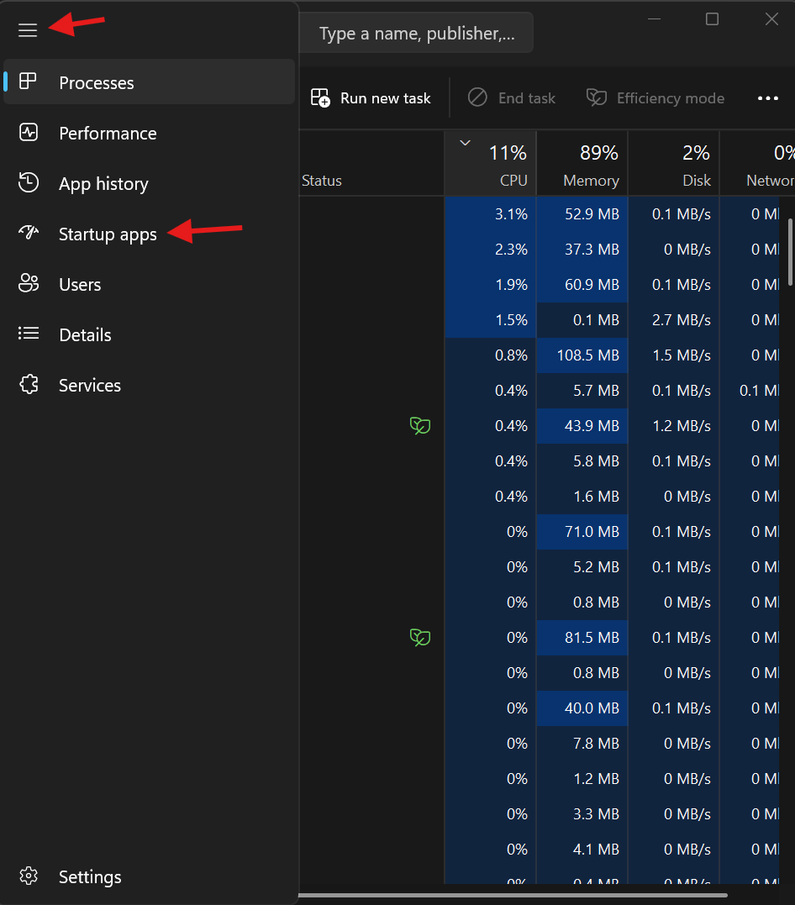

Everyone has experienced a slow computer at some point, and I'll admit, it's painful. However, there are many common causes of a slow computer, and many easy fixes.
Browser Tabs
Having too many browser tabs can lead to high RAM usage. The RAM is a small amount of storage the CPU (Brain of the computer) uses to store programs that are actively running. Each tab takes up RAM, and when RAM usage is too high, performance significantly drops. I would recommend closing the browser window and restarting your computer.

Low Storage Space
Low storage space is one of the most common causes of a slow computer. Without enough storage, updates can fail, temporaary files build up, and performance slows. A quick and easy way to clear storage space on a Windows PC is by going to Settings -> System -> Storage -> Cleanup recommendations. Here you can view temporary files, large attachments, apps you don't use, and cloud files.
Startup Apps
Some apps, such as Steam, Spotify, Discord, and other game launchers start running when you start your computer, using up your system resources even when you aren't doing anything. This problem also has an easy fix. Open Task Manager, click on the 3 lines, then on Startup apps. Here you can view any apps that run on start-up, then click on the app name, and click Disable to prevent them from using up your system resources on the next boot.

Updates
Regular Windows and app updates can slow down your computer temporarily, but performance resumes once the update is done. Updates are necessary, but it is possible to schedule them for a time your computer is not in use.
Summary
In summary, a slow computer can be caused by many things, and can be easily fixed through settings, task manager, and the browser.